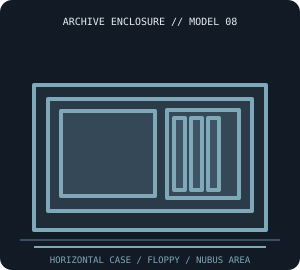

[ IDENTIFIED SYSTEM // APPLE MACINTOSH II ]
Apple Macintosh II Desktop Enclosure
Horizontal desktop system enclosure with separate monitor; approximate chassis envelope 18.7 × 14.4 × 6.0 in (W × D × H).

MODEL / REVISION BOUNDARY: The Macintosh II is distinct from IIx (different processor/logic board configuration) and compact IIcx. Case similarity does not establish board or PSU compatibility.
Enclosure specifications
| Exact model / generation | Apple Macintosh II (Model M5000 series, 1987); distinguish IIx/IIcx/IIci cases and board assemblies. |
|---|---|
| External dimensions | Approximately 18.7 × 14.4 × 6.0 in (W × D × H) reported for the desktop system unit; excludes monitor, keyboard, feet and rear cable bend radius. |
| Form factor / board layout | Horizontal desktop metal/plastic enclosure with removable top and full-size internal NuBus board area; Apple-specific logic board layout, not ATX. |
| Proprietary power supply | Internal Apple-specific switching power supply and harness; Macintosh II supply case, fan and connectors are not interchangeable with an ATX PSU. Identify exact PSU/logic-board revision. |
| External bays / ports | No externally accessible standardized 5.25-inch bay; rear card openings and ports are not drive bays. |
| Internal bays / mounts | Internal 3.5-inch floppy location plus hard-disk mounting provision(s) vary by drive carrier/configuration; no generic external bay. Do not infer populated mounts from an empty shell. |
| Service / compatibility | Consult the Macintosh II Service Source and Apple technical/hardware guides. Disconnect mains, service CRT separately, and retain grounding straps, shields, fan and correct drive carrier. |
| Revision identification | The Macintosh II is distinct from IIx (different processor/logic board configuration) and compact IIcx. Case similarity does not establish board or PSU compatibility. |
Service, restoration & fit notes
Consult the Macintosh II Service Source and Apple technical/hardware guides. Disconnect mains, service CRT separately, and retain grounding straps, shields, fan and correct drive carrier.
Internal Apple-specific switching power supply and harness; Macintosh II supply case, fan and connectors are not interchangeable with an ATX PSU. Identify exact PSU/logic-board revision.
- Record the full model/type label, board and power-supply assembly numbers, drive labels and manual revision before disassembly.
- Preserve original shields, brackets, hinges, feet, keyboard/CRT harnesses and proprietary fasteners with this exact enclosure; do not assume contemporary PC standards apply.
- Dimensions are approximate where noted; measure the actual specimen and leave clearance for cables, vents, lids/handles and attached peripherals.
Manufacturer & archival manual citations
- Apple Service Manuals — Internet Archive collection (Macintosh II Service Source materials)Archival collection of Apple model service manuals; select the Macintosh II document/revision.
- Apple Service Technical Procedures, Macintosh Family, Volume Two (1991) — Internet ArchiveApple service procedures manual for the Macintosh family; check its model/revision coverage against the Macintosh II hardware.
Manuals may cover only a stated revision or configuration; compare the title page and machine labels before applying procedures.